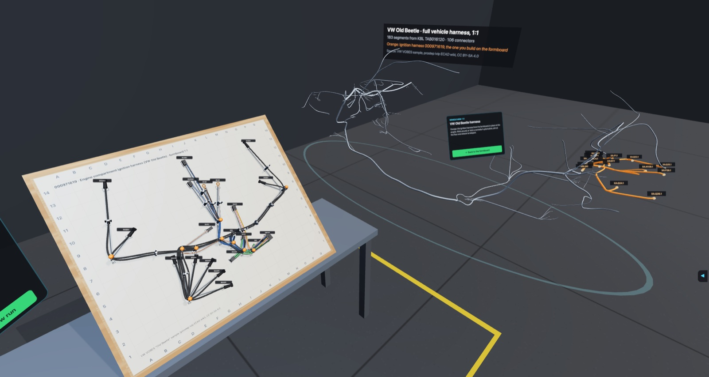

← All projects

Formboard XR
FAU – Institute FAPS | 10/2026 | Developer (graduate research assistant)
KBL data in VR: wire harness assembly trainer, live in the browser

What?
- Harness assembly is manual work on a formboard. An XR system needs the harness as a 1:1 board layout, which the KBL file does not contain.
- Goal: a data-driven trainer that runs on a Meta Quest 3 without installation.
How?
- Python pipeline: the KBL of the public VW “Old Beetle” is flattened to a formboard at true segment lengths; pegs follow from the topology.
- WebXR app with hand tracking: route wire by wire, every peg is checked; guided and test mode; time, errors and hints are logged.
Results
- 18 wires, 20 connectors; the KBL wire lengths match the board paths to the millimetre.
- Live demo: suavi-yildirim.github.io/formboard-xr